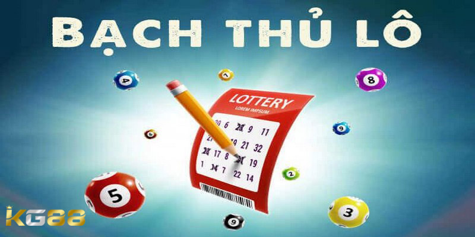

THỂ THAO KG88
Hướng Dẫn Cách Chơi Bạch Thủ Lô Hốt Bạc Cho Game Thủ
POSTED ON THÁNG SÁU 24, 2024 BY ADMINKG88

Cách chơi bạch thủ lô luôn là thuật nhữ nhận được nhiều sự quan tâm của game thủ và chắc chắn không thể thiếu trong từ điển của cao thủ. Nếu anh em đang có mong muốn tìm kiếm cách chơi hiệu quả của loại hình này, đừng bỏ qua bài viết dưới đây cùng KG88 để có những cách chơi hay nhé.
Bạch thủ lô là gì?
Bạch thủ lô là một thuật ngữ thường được dùng trong lô đề viết tắt là BTL, bắt nguồn từ trò chơi tổ tôm, dùng để chỉ hành động của thành viên tham gia chỉ đánh một số duy nhất để phân định thắng thua. Khi chơi bạch thủ lô anh em cần phải rèn luyện kĩ năng phán đoán để tìm ra được con số có độ chính xác cao nhất.
Bạch thủ lô thường được các cao thủ yêu thích và áp dụng bởi họ đã trải qua nhiều năm kinh nghiệm, có đầy đủ kiến thức để đưa ra được những phán đoán chính xác nhất dựa vào các dấu hiệu của cầu lô xuất hiện.
Những quy tắc cần nhớ trong cách chơi bạch thủ lô
Dưới đây là một số những quy tắc mà anh em cần phải ghi nhớ để có được cách chơi bạch thủ lô hiệu quả nhất:
- Nắm rõ được luật chơi là cách để mang chiến thắng lại gần với người chơi nhất. Điều đầu tiên là anh em cần phải am hiểu về các quy tắc sau đó tham khảo thêm về cách chơi lô đề dễ ăn nhất tại Miền Bắc và tỷ lệ đổi thưởng của cả 3 miền.
- Hãy nghiên cứu kỹ càng và đưa ra quyết định đúng đắn khi chọn số: Lô đề là một trò chơi đỏ đen có tính chất may rủi vì thế khi tham gia anh em có thể thắng hoặc thua, nhưng khi đã có sự chuẩn bị trước thì rủi ro xảy ra cũng giảm đi đáng kể.
- Nên dựa vào những thông tin bổ ích của công cụ thống kê kết quả trên trang xổ số KG88 hỗ trợ. Điều này sẽ giúp ích cho anh em rất nhiều trong việc lựa chọn ra những số dễ trúng nhất vào hôm sau.
- Không nên chơi quá nhiều số cùng một lúc vì nguồn vốn mà mọi người phải đầu tư sẽ rất lớn. Nếu như anh em không thắng thì rất dễ dẫn đến tâm lý cay cú muốn gỡ gạc lại và từ đó sẽ càng thua một cách thảm hại hơn.
Những quy tắc cần nhớ trong cách chơi lô bạch thủ
Bật mí những cách chơi bạch thủ lô có lãi dành cho cược thủ
Khi chơi lô đề nếu như chỉ dựa vào yếu tố may mắn hay theo cảm tính thì sẽ không bao giờ đạt được hiệu quả cao. Nếu muốn nâng cao khả năng chiến thắng anh em phải bỏ túi cho mình được những kinh nghiệm, mẹo chơi hiệu quả. Dưới đây là một số các cách chơi bạch thủ lô được nhiều lô đề thủ chia sẻ và áp dụng thành công, nếu muốn nhận thưởng lớn về tay thì anh em đừng ngần ngại học hỏi theo:
Tham khảo những con số bạch thủ từ mọi người xung quanh
Anh em cũng có thể tham khảo những con số từ mọi người xung quanh từ đó có thêm lựa chọn chính xác khi tham gia cá cược. Ngoài ra trên các diễn đàn cộng đồng cũng mang đến những phương pháp soi cầu có độ chính xác rất cao. Các cao thủ sẵn sàng chia sẻ những cách chơi bạch thủ lô hiệu quả trên trang đó, anh em có thể dựa vào đây để học hỏi và tích lũy kinh nghiệm cho riêng mình.
Tham khảo những con số bạch thủ từ mọi người xung quanh
Nuôi bạch thủ kết hợp đánh dàn để hạn chế được rủi ro
Cách chơi bạch thủ lô kết hợp cùng việc nuôi dàn cũng là cách chơi mang lại hiệu quả cao mà nhiều cược thủ quan tâm và sử dụng. Khi soi cầu bằng phương pháp chuẩn xác thì tỷ lệ trúng bạch tủi đi kèm với dàn lô là rất cao.
Nếu như không may mắn trượt bạch thủ thì dàn lô mà anh em nuôi sẽ vẫn có khả năng trúng. Trường hợp này chúng sẽ bù trừ cho nhau và vẫn đảm bảo mang lại khoản lãi cho người chơi.
Phân bổ nguồn vốn hợp lý trong cách chơi bạch thủ lô
Trong cách chơi bạch thủ lô, anh em cần phải quản lý nguồn một cách hợp lý, nên vạch ra cho mình một mức tiền cược nhất định và tuân thủ vào nó. Không nên quá ham vào một con số để tránh tình trạng chơi tất tay dẫn đến mất trắng, hãy biết đâu là điểm dừng và thời điểm nào nên chơi tiếp.
Có thể nói chơi lô đề là sự đầu tư dài hạn có lúc được và sẽ có lúc mất. Phương pháp lãi mỗi lần một ít, tích nhỏ thành to là 1 chiến thuật chơi khá là hiệu quả được nhiều người chơi lựa chọn. Ngoài ra anh em cũng có thể chốt số dựa vào thống kê lô gan, nếu chiến thắng tỷ lệ trả thưởng sẽ là 1:25.
Phân bổ nguồn vốn hợp lý trong cách chơi bạch thủ lô
Bài viết trên đã được KG88 tổng hợp và chia sẻ đến bạn đọc những cách chơi bạch thủ lô hiệu quả từ các dân chuyên có kinh nghiệm lâu năm. Hy vọng với những mẹo chơi này sẽ giúp anh em áp dụng vào thực tế thành công, thu về nhiều phần thưởng giá trị cho mình.
Xem thêm: Hướng Dẫn Cách Lên Dàn Đề 64 Số Hiệu Quả Thắng Lớn
BÀI VIẾT MỚI